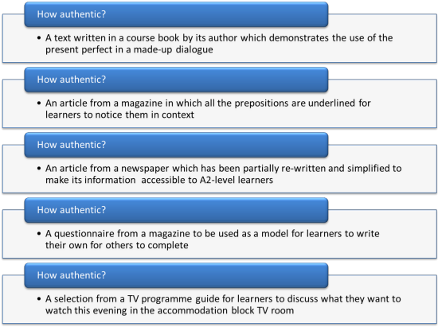

Authenticity
|
Authentic = of undisputed origin and not a copy; genuine (Google) Authentic adj =
the degree to which language teaching
materials have the qualities of natural speech and writing |
In 'normal' use, the word is an either-or, on-off adjective.
There are no degrees of genuine or undisputed.
You can't have a painting which is a bit genuine and that is either
a genuine Stradivarius violin you are playing or it isn't.
On the other hand, in English language teaching, the term is used
somewhat differently. In our profession, material can be judged
on a scale from truly inauthentic to truly authentic. Like
this:

What follows is one take on trying to classify and make sense of this. The terms one should use to describe materials in this area are disputed.
 |
Two types of authenticity |
In most cases 'authentic' simply describes materials used for teaching which were not originally intended for that purpose. So authentic material is
- Designed for native speakers to hear or read.
- Written or spoken for a real communicative purpose by people who have a message to impart to an audience.
Even this simple definition has a problem insofar as there are
materials out here on the web and certainly on the radio which are
written for a truly communicative purpose but also simplified to
appeal to and be accessible to non-native speakers of English.
A common written example is material published by a
language-training institution to provide information, (e.g., a
prospectus), set out policies (e.g., school rules, codes of conduct,
payment terms and so on). All of these documents may be
simplified bearing the non-native-speaking audience in mind but all
have a real communicative purpose. They are authentic in
purpose but may still appear contrived and unauthentic to a native
speaker.
In what follows we are following Lee (1995) in distinguishing between text authenticity and learner authenticity. In Lee's words:
‘text authenticity’ is defined in terms
of the origin of the materials, while ‘learner
authenticity’ refers to the learner’s interaction with
them, in terms of appropriate responses and positive psychological
reaction
(Lee, 1995: 323)
Lee goes on (op cit.):
Looking at authenticity in this way, we can conclude that textually authentic non-textbook materials will not necessarily be learner authentic, and that textually unauthentic textbook materials will not necessarily be learner unauthentic.
So:
- Text authenticity refers to the text itself:
- Designed for non-teaching purposes
- Written or spoken for a real-world (i.e., non-teaching) communicative purpose
- Learner authenticity refers to the purposes for which the
text is used:
- The original purpose of the text vs.
- The classroom use to which it is put
In what follows, we are looking at the two types of authenticity separately but the relationship between them should be borne in mind.
Text authenticityThe origin and purpose of the text |
Here are some examples. Think about the differences between the text types in terms of authenticity and then click on the table when you have some way of describing them.

To qualify as truly authentic material, the source and the use must be authentic. We have, therefore, 4 degrees of authenticity:
- Authentic materials
- These are sourced authentically and used for their original
purposes. They are quite rare. Examples might
include:
A learning styles questionnaire
Materials used on an academic, scientific or occupational English course
A TV guide (see above)
Fire drill instruction in a school
Class excursion planning materials taken from websites advertising local attractions
Texts on how to study and remember facts - Quasi-authentic materials
- These are materials originally intended for communicative
purposes but whose use is changed. They are very common.
Examples might include:
Texts taken from various genres for analysis of their structure, staging and language content in the classroom. These could be narratives, reports, procedures, recipes, letters etc.
Texts taken from published sources as the basis of examination tasks
Other sources of texts are: advertisements, visitor guides, social website posts, notices, packaging, menus, blogs, T-shirts, maps, political slogans and a host more. - Audio materials are less commonly available but will include radio and TV broadcasts, YouTube and other internet-based video sources, on-line lectures and presentations, voice mails, recorded messages and so on.
- Semi-authentic materials
- These are based on authentic materials but are simplified in
some way to make them accessible, especially to lower-level
learners. These are usually written because it is so much
more difficult and often impossible to simplify audio and video
recordings. Examples might include:
Graded readers
Texts based on magazine and newspaper articles
Teacher-written texts based on other information (often a compilation of some sort) - Contrived, unauthentic materials
- Even when these make an effort to appear authentic, they are
recognisably not authentic and they might include:
Tests for students
Language exercises
Texts, both spoken and written, intended to exemplify certain language features (structures, lexis, discourse etc.)
Spoken dialogues, telephone conversations, interviews etc. intended to exemplify communicative acts and functions
Emails purporting to be from a friend - Most examination materials
- Task instructions
 |
Learner authenticityThe nature of the user's interaction with the text |
In addition to deciding how authentic a text actually is there are other considerations:
- For whom is it authentic?
- To have much learner authenticity, the text needs to be directed at the sorts of people the learners actually are. There's little point in using irrelevant materials, however authentic they are.
- What are the text's purposes?
- The tasks that learners are set need to match the text's
purposes to be truly authentic in terms of their use.
For example, if a questionnaire is used simply to analyse question structures, then its use is not authentic to the learners, who may well be interested in answering the questions.
In addition to those two factors, the same considerations apply to authentic texts, of whatever degree of text authenticity, as apply to all classroom materials choice. Briefly:
- Does it appeal?
- Is it relevant to the learners now?
- Is it relevant to the learners' future needs for language?
- Does it look / sound interesting and engaging
- Is it centred on these
learners?
- Is it accessible, given the learners' current level of skills?
- Does it really do what we think it does?
- Does it lead to real communication?
- Is there potential for extending its communicative use?
- Are the sorts of communicative acts the text stimulates ones which the learners actually need?
- Does it contribute to learning?
- Is it compatible with the syllabus?
- Is it compatible with the course objectives?
 |
The supposed advantages of authentic material |
 |
Motivation |
Many writers in the field point to the fact that authentic materials are positively viewed by learners.
Learners find it extremely
motivating to hear something that has not been simplified: they feel
that they are getting to grips with real language.
(Field, 1997, p49)
Motivation is usually measured or judged in terms of
- interest and enthusiasm
- persistence with tasks
- perceived enjoyment
and, anecdotally at least, many assume or assert that authentic
materials contribute to motivation. One study (Peacock, 1997)
showed that motivation did increase but learners found authentic
materials actually less interesting than contrived ones.
As there is almost certainly a link between motivational levels and
achievement, then the use of authentic material has to be A Good
Thing ...
... but ...
Click here when you have thought of a couple of buts.
- Help! I'm drowning!
Authentic texts are, by their nature, ungraded for level so learners may feel overwhelmed by the amount of unknown lexis in particular. At lower levels, with learners untrained in using good reading and/or listening skills, this can result in frustration, demotivation and anxiety. The tasks learners are asked to perform have to be very carefully graded to make them achievable. - I'm not interested in this
Authentic texts may have been carefully chosen for their features but if the subject matter is not interesting, they will serve to disengage the learners from the tasks. By definition, no authentic material has been developed with your learners in mind.
For example, a class of Business English students in their 20s may not be very interested in a text aimed at people in their 60s planning retirement even though it contains much language that they will need to deploy in business settings. - What am I learning?
Learners need to know where materials are taking them. With most contrived (e.g., coursebook) materials, this is clear because there is some sense of internal development. Authentic materials, unless they are carefully inserted into an obviously purposeful and orderly lesson, will often leave learners wondering why they have focused so hard on them.
Reality |
It is often asserted that authentic materials are better than contrived materials at reflecting real language used by real speakers and writers. This is seen as positive because
- authentic language use is the aim of most teaching
- models presented to learners should reflect the real use of the target language
- learners need exposure to real language as early as possible to prepare them for the out-of-classroom experiences
... but ...
Click here when you have thought of a couple of buts.
- What the focus?
Because authentic texts are not written with any language or skills target in mind, they are often quite poor at representing them. For example:
A text may contain a number of examples of a target structure but, unless it is very unusual and/or carefully adapted, the frequency of the target items is likely to be much lower than that found in contrived materials. There may, for example, be 5 uses of going to for future intentions in a listening text but if the learners have to listen for 10 minutes to lots of other, less relevant language, the focus may be lost and the learners may not notice the targets at all. - Style and register
Authentic texts are often written or spoken for some rhetorical effect and with a specific audience in mind. They may represent real language, of course, but may also assume a level of prior knowledge in the audience which your learners do not have.
For example, a text intended to be amusing or quirky may contain so much that is culturally dependent that the effect is lost on those from different cultures.
Equally, a text designed for a specific interest group such as readers of certain kinds of magazine may assume knowledge that your learners simply don't have. The result will be confusion and frustration. - Non-standard language
Authentic texts often contain examples of non-standard grammar, word use and word ordering. As the amount of language that learners can encounter in the classroom from which to notice such things is very limited, it makes little sense if much of what they see and hear is non-standard or unusual use for effect.
For example, a song lyric which contains If you ain't got nothing, you ain't got nothing to lose may be emotionally effective but as a model for low-level learners to understand and use negatives and conditional clauses it is arguably less effective.
Summary
Nothing in the foregoing is intended to dissuade you from using
authentic materials. It is, however, important to know what
they are, how to select them and how to use them.
Here's a summary of this guide's main points with some examples and
explanation.

References:
Field, J, 1997, Notes on Listening; Authenticity, Modern
English Teacher, Vol. 6. No. 3, pp. 19-51
Lee, WY, 1995, Authenticity revisited: text authenticity and
learner authenticity, English Language Teaching Journal, 49/4,
Oxford: Oxford University Press
Peacock, M, 1997, The effect of authentic materials on the
motivation of EFL learners, English Language Teaching Journal,
51/2, Oxford: Oxford University Press
Richards, J, Platt, J & Platt, H, 1992, Longman Dictionary of
Language Teaching and Applied Linguistics (2nd Ed.), Harlow:
Longman